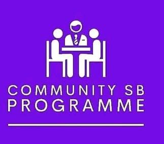
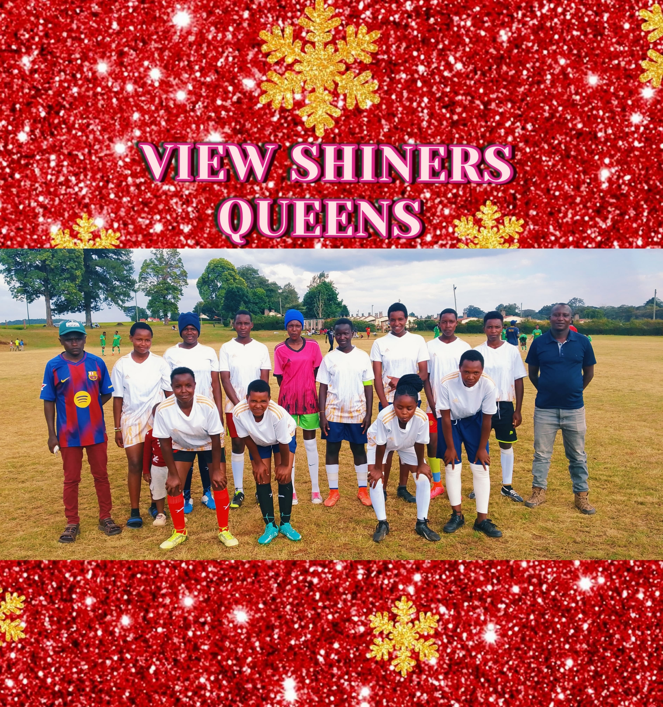
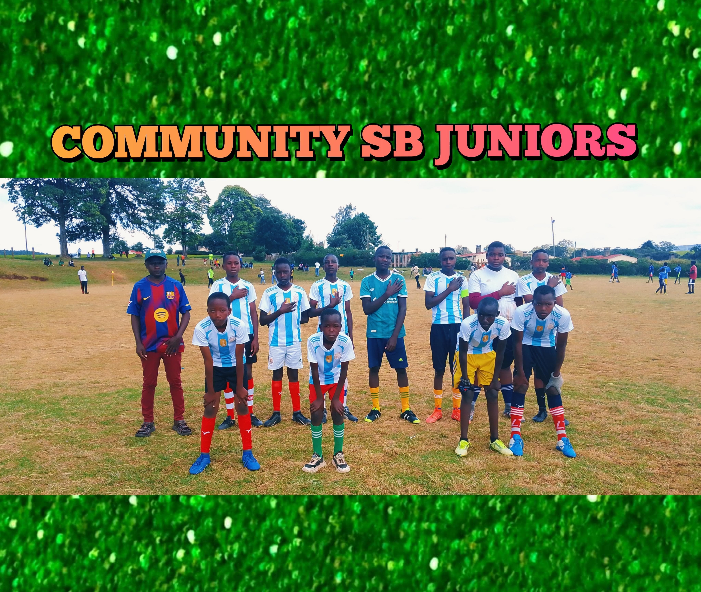

AARON COACHES "LUCKY DE PRINCE"
Professional Football Coach | Tactical Leader | Mentor
Leading View Shiners FC with tactical discipline, modern training methods, and a relentless focus on developing future champions in Londiani, Kericho County, Kenya.
.jpg)
About Aaron
Passionate coach. Tactical mind. Community leader.
Aaron "Lucky De Prince" is a passionate football coach dedicated to developing young talent and building disciplined, competitive teams. As head coach of View Shiners in Londiani, he focuses on tactical intelligence, teamwork, and mental strength.
Outside of leading View Shiners FC, he guided Haraka High School in schools games for 2 years, helping the school reach county-level competition for the first time, and led Cheptenye Boys Secondary School to sub-county level for 1 year — sharpening young players for bigger stages.
Today, View Shiners FC runs structured categories including the ladies team View Shiners Queens; the club's Under-17 side, View Shiners Rising Stars; and Community SB Juniors at Under-15, Under-12, Under-9, and Under-7. This creates a clear pathway from grassroots to senior football, with distinct management for both male and female teams across junior and senior levels.
Contact for scouting, workshops, and coaching consultations.
0
Players Mentored
0
Years of Coaching
0
Matches Managed
.jpg)
Fast Facts
Location: Londiani, Kericho County, Kenya
Role: Head Coach — View Shiners FC
Focus: Tactical systems, youth development, mental conditioning
Coaching Philosophy
The principles that shape how Aaron builds champions.
Tactical Intelligence
Clear systems, match analysis, and adaptable gameplans to outthink opponents.
Discipline & Mental Strength
Structure, routine and mental conditioning form the backbone of team success.
Team Unity
Cohesion on and off the pitch — a family-first culture that drives results.
Leadership & Vision
Developing leaders — on the pitch and in the community — for long-term success.
"Champions are built through discipline, belief, and hard work."
View Shiners FC
Local pride. Professional ambition.
Team Mission
To cultivate disciplined, technically proficient players who can compete at national and regional levels, while strengthening community ties.
Training Methodology
- Periodised training plans
- Tactical video sessions
- Small-sided games and technical drills
Community Impact
Outreach programs, youth talent identification and community engagement events across Londiani.
Gallery
Moments from training and matchdays.
.jpg)
.jpg)
.jpg)
.jpg)

.jpg)


.jpg)
.jpg)
.jpg)
.jpg)
.jpg)



Chelsea Inspiration
Royal blue aesthetics and a commitment to excellence inform Aaron's coaching identity. Inspired by Chelsea Football Club's discipline, tactical sophistication, and championship mentality — blending tradition with ambition.
Contact
Reach out for coaching, scouting, or community programs.
Phone: 0716 225 961
Email: kipchirchiraaron56@gmail.com
Facebook: View Shiners FC
WhatsApp: Chat on WhatsApp
📍 Londiani, Kericho, Kenya